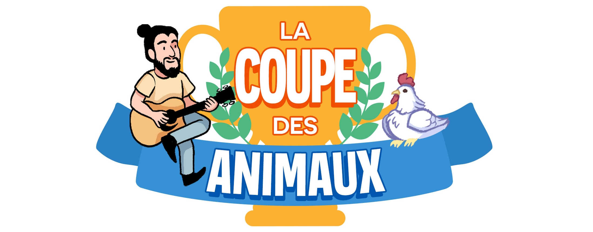

La Coupe des Animaux
Création 2023, un conte musical pour enfant à partir de 3 ans, dans lequel Samuel Genin embarque les enfants dans une aventure amusante peuplée d’animaux rigolos. De sa voix, son corps, ses grimaces, mais aussi les différents instruments de musique qu’il amène (guitare, flûte, percussions, etc.), il rythme le récit alternant aventures et respirations poétiques.
Petite Poule veut participer aux Jeux Olympiques des Animaux, mais devant toutes ces athlètes, elles ne se sent pas à la hauteur. Alors, son amie le kangourou lui conseille d’aller se former auprès des autres animaux qui peuplent sa forêt !
Elle ira voir le guépard pour apprendre la vitesse du vent.
Elle ira voir le paon pour apprendre la grâce de la rivière.
Elle ira voir la gorille pour apprendre la force de la montagne.
Mais le jour des Jeux, elle découvrira peut-être que la coopération apporte plus que la compétition...
*
Déjà plus de 70 dates vendues en France et au Royaume-Uni ! Plus d'info et contact dans le dossier du spectacle.
Prix : 350 € + frais de transport